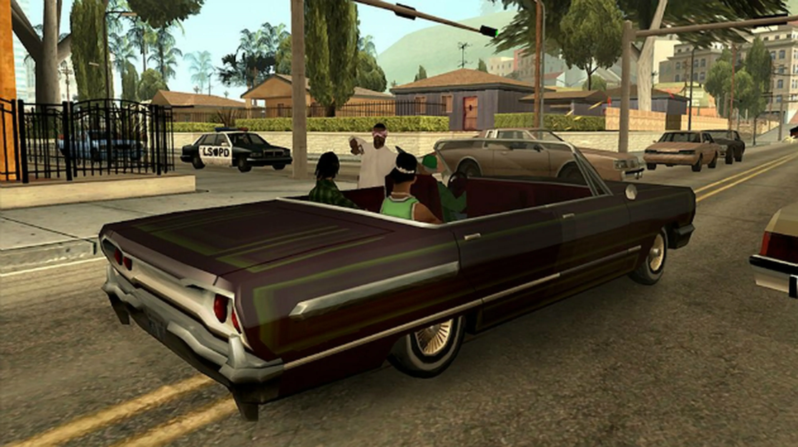
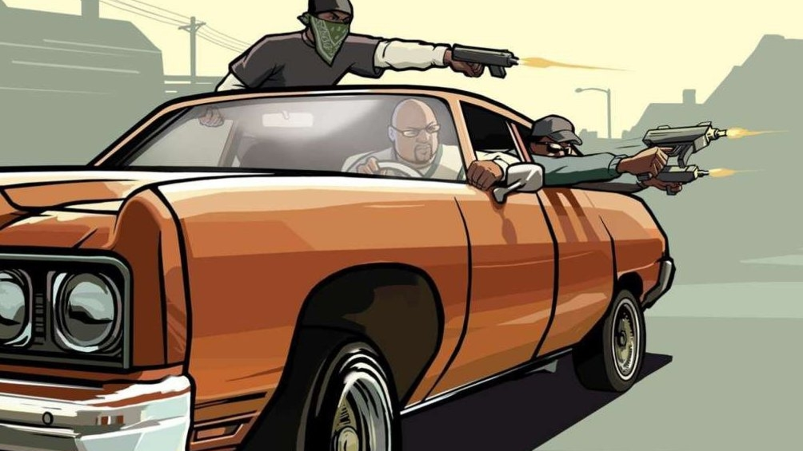
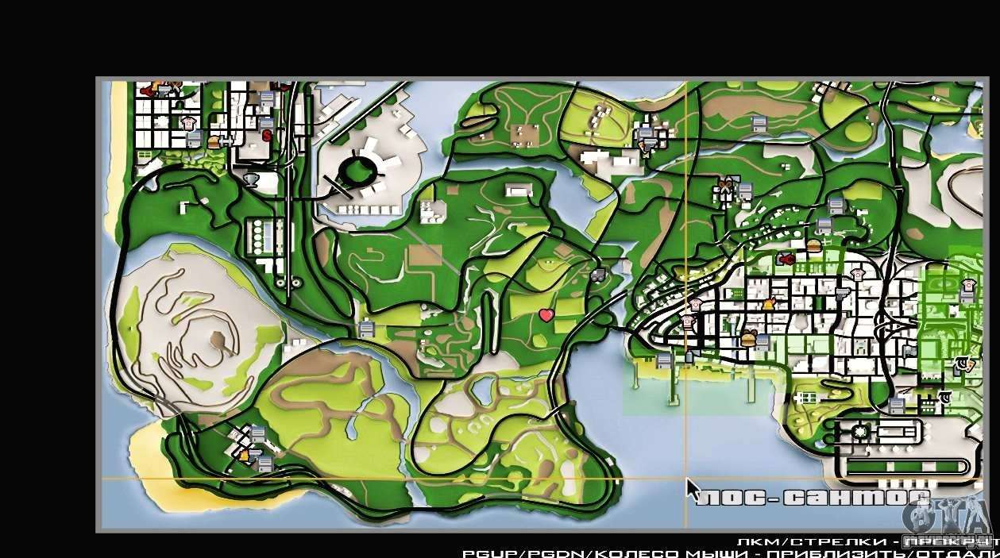

- Juego: Metal Slug 5
- Peso: 2.35 GB
La historia del juego trascurre en el estado ficticio de San Andreas, basado en la zona suroeste estadounidense. Ambientado en 1992, San Andreas cuenta la historia de Carl Johnson, quien decide volver a Los Santos tras cinco años de haberse establecido en Liberty City. Su trama se basa, de modo muy abierto, en sucesos como la rivalidad entre las pandillas Bloods y Crips, la epidemia de crack que hubo en esa época y los disturbios de Los Ángeles de 1992